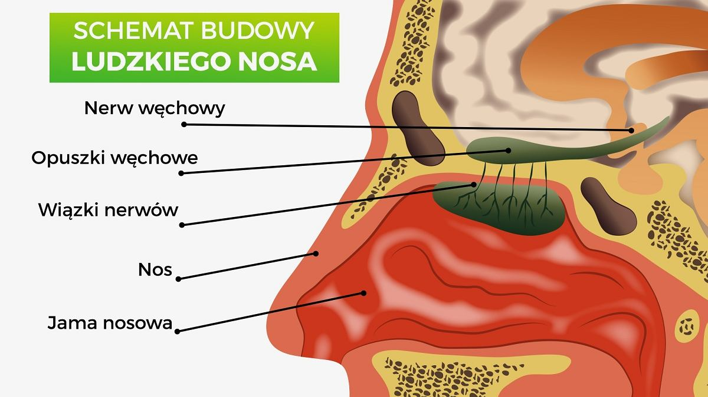

Witamy!
Zmysł węchu, czyli olfakcja, odgrywa kluczową rolę w naszym codziennym życiu...
Anatomia Nosa
- Nozdrza: Otwory, przez które dostaje się powietrze.
- Opuszka węchowa: Przetwarza informacje o zapachach.
- Małżowiny nosowe: Pomagają filtrować powietrze.
- Zatoki: Przestrzenie wypełnione powietrzem.
Jak działa zmysł węchu?
- Cząsteczki zapachowe dostają się do nosa...
- Receptory wysyłają sygnały do opuszki węchowej.
- Mózg interpretuje te sygnały.
Najczęstsze zaburzenia węchu
- Anosmia: Całkowita utrata węchu.
- Hiposmia: Osłabiona zdolność odczuwania zapachów.
- Parosmia: Zniekształcone odczuwanie zapachów.
Ciekawostki
- Ludzie mogą wykrywać ponad bilion różnych zapachów.
- Zmysł węchu jest powiązany z pamięcią.
- Psy mają węch 40 razy silniejszy niż ludzie.